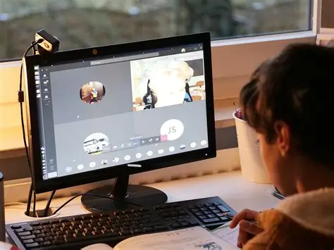

Practical Tech Skills Every Student Should Learn Before Graduation
In today’s world, having a degree is good — but having practical tech skills is better.
- Basic Coding: Even simple HTML and Python can open doors.
- Digital Communication: Professional email writing and online collaboration tools.
- Graphic Design: Tools like Canva or Photoshop to create visual content.
- Cybersecurity Awareness: Protect your data and privacy online.
- Problem-Solving with Technology: Learn to use tech creatively to solve everyday problems.
Equipping yourself with these skills will make you more competitive and future-ready.
Go Back Home